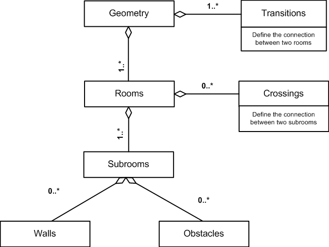
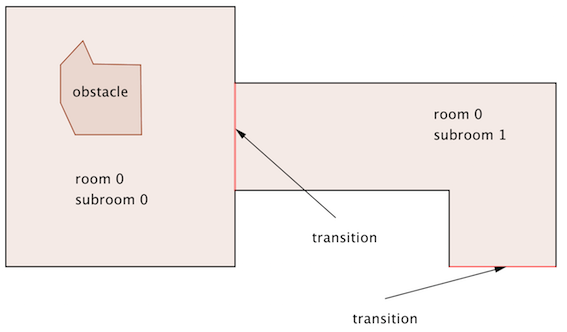
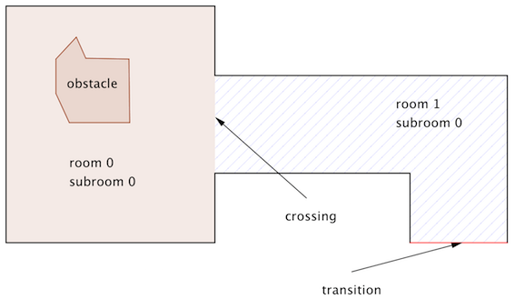

File formats
jpscore uses two input files and produces an output file with trajectories.

The geometry file defines the scenario that should be used in the simulation, while the inifile defines different settings, parameter values, population properties etc.
The result of a (successful) simulation is saved in a trajectory file in a given format.
Geometry
The main structure of the geometry file is as follows

Following picture shows a sample geometry with one room, two subrooms and one obstacle.

subrooms and rooms are two different concepts to organize a geometry.
Basically, it is up to the user to organize its geometry “roomwise” or “subroomwise”.
For instance the above mentioned geometry could also be organized using two rooms as follows: 
A geometry can be produces manually (for small scenarios) or with jpseditor. In both cases it is recommended to visualize the geometry once finishedwith jpsvis.
The main components of a geometry are:
Rooms
The geometry contains at least one room and one transition.
Each room has a unique id, an optional caption and at least one subroom.
Two rooms are separated by either walls or transitions.
<rooms>
<room id="0" caption="hall" >
</rooms>
Subrooms
Subrooms define the navigation mesh, i.e the walkable areas in the geometry.
Each subroom is bounded by at least one crossing.
Here a sample:
<subroom id="1" class="stair" A_x="−1.2" B_y="0" C="0">
<polygon caption="wall">
<vertex px="0.0" py="1.0"/>
<vertex px="−5.0" py="1.0"/>
</ polygon>
<polygon caption="wall">
<vertex px="0.0" py="3.0"/>
<vertex px="−5.0" py="3.0"/>
</ polygon>
<up px="−5.0" py="2"/>
<down px="0.0" py="2"/>
</subroom>
idmandatory parameter, also referred by crossings and transitions.classoptional parameter defining the type of the subroom. At the moment two classes are defined:floorstairstake additionally<up px="-5.0" py="2" />and<down px="0.0" py="2" />, which are used for visualisation purposes.-
are optional parameter for the explicit plane equation of the subroom, for the construction of a 3D environment and should be used to describe stairs.
The plane equation is given by: . For instance, if the stair goes through the following points: then the equation is given by: . -
polygondescribes the walls as a sequence of vertexes.
To ease navigation, it is recommended to always use convex subrooms. In the case the subroom is not convex, additional navigation lines might be required or the floor field router should be used.
Note: Every room has at least one subroom.
Obstacles
One or more obstacles can also be defined within a subroom.
Note: Obstacles should not intersect with other geometry elements e.g. walls, crossings or transitions.
Sample obstacle in a subroom
<obstacle id="0" caption="table" height="1.0" >
<polygon>
<vertex px="12.0" py="6.0"/>
<vertex px="13.0" py="6.0"/>
<vertex px="13.0" py="5.5"/>
<vertex px="12.0" py="5.5"/>
<vertex px="12.0" py="6.0"/>
</polygon>
</obstacle>
id, mandatory unique identifier for this obstacle.caption, used in the visualisation.height, optional parameter, not used at the momentpolygon, describing the obstacle as a sequence of vertex.
Transitions
A transition defines the connection between two rooms and is basically a door.
It can be close or open (see “traffic constraints”).
An example transition between two rooms
<!-- exits between rooms or to outside (room with index = -1) -->
<transition id="1" caption="main exit" type="emergency"
room1_id="0" subroom1_id="1" room2_id="-1" subroom2_id="-1">
<vertex px="15.0" py="-5.0"/>
<vertex px="17.0" py="-5.0"/>
</transition>
id, mandatory unique identifier. Theidis also used to close or open the door in the “traffic constraints” section of the inifile.caption, optional, used in the visualisation.type, optional.room1_id, the first room sharing this transition. The order is not important.subroom1_id, the firstsubroomlocated inroom_1.room2_id, the second room sharing this transition. The order is not important. If there is no second room (meaning this transition is connected to the outside), then use-1.subroom2_id, the secondsubroomsharing this transition. The order is not important. If there is no secondsubroom(meaning this transition is connected to the outside), then use-1.vertex: define two ending points of thetransition.
Crossings
A crossing defines the connection between two subrooms inside the same room.
Unlike transition, they are always open.
A sample crossing between two subrooms
<!-- virtual exits between subrooms -->
<crossing id="0" subroom1_id="0" subroom2_id="1">
<vertex px="10.0" py="6.0"/>
<vertex px="10.0" py="4.0"/>
</crossing>
id, mandatory unique identifier for thiscrossing.subroom1_id, the firstsubroomsubroom2_id, the secondsubroomsharing this transition. The order is not important. If there is no second subroom (meaning this transition is connected to the outside), then use-1.vertex: define two ending points of thecrossing.
Inifile
With the content of the inifile, the simulation with jpscore can be controlled.
The typical structure of an inifile is as follows:
<?xml version="1.0" encoding="UTF-8" ?>
<JuPedSim project="JPS-Project" version="0.8"
xmlns:xsi="http://www.w3.org/2001/XMLSchema-instance"
xsi:noNamespaceSchemaLocation="https://github.com/JuPedSim/jpscore/blob/master/xsd/jps_ini_core.xsd">
<header>
<!-- seed , geometry, output format -->
</header>
<traffic_constraints>
<!-- traffic information: e.g closed doors or smoked rooms -->
</traffic_constraints>
<goals>
<!-- goals (closed polygons) outside the geometry-->
<goals/>
<agents>
<agents_distribution>
<!--persons information and distribution -->
</agents_distribution>
</agents>
<operational_models>
<model id="n" description="name">
<!-- parameters of model (<n>, "name") -->
</model>
<!-- other models can be defined -->
</operational_models>
<route_choice_models>
<router router_id="n" description="name">
<!-- parameters of router (<n>, "name") -->
</router>
<!-- other routers can be defined -->
</route_choice_models>
</JuPedSim>
The main components of the inifile are:
Header
The header comprises the following elements:
-
<seed>s</seed>Set the
seedvalue of the random number generator tos. If missing the current time (time(NULL)), is used i.e. random initial conditions. -
<max_sim_time>t</max_sim_time>the maximal simulation time in seconds. -
<num_threads>n</num_threads>the number of used cores. -
<show_statistics>true</show_statisticsShow different aggregate statistics e.g. the usage of the doors. (default: false) -
<logfile>log.txt</logfile>save relevant information about the simulation to a log file. Useful to keep track of warnings or errors that may rise during a simulation. -
The trajectory file
<trajectories format="xml-plain" fps="8" color_mode="velocity"> <file location="trajectories.xml" /> </trajectories>The options for the format are
-
xml-plain: the default xml format. It can lead to large files. See section xml-plain. -
plain: simple text format. See section plain-text. -
The value
fpsdefines the frame rate per second for the trajectories. -
color_mode: coloring agents in the trajectories. Options are: velocity(default): color is proportional to speed (slow –> red).spotlightgroup: color by groupknowledgerouterfinal_goal-
intermediate_goal -
file locationdefines the location of the trajectories. All paths are relative to the location of the project file.
-
-
<geometry>geometry.xml</geometry>The name and location of the geometry file. All file locations are relative to the actual location of the project file. See specification of the geometry format.
Traffic constraints
This section defines constraints related to the traffic.
At the moment the state of the doors can be changed (open or close)
<traffic_constraints>
<!-- doors states are: close or open -->
<doors>
<door trans_id="4" caption="Main-gate" state="open" />
<door trans_id="6" caption="Rear-gate" state="close" />
</doors>
</traffic_constraints>
-
trans_id: unique id of that specific door as defined in the geometry file. See geometry. -
caption: optional parameter defining the caption of the door. -
statedefines the state of the door. Options arecloseoropen.
Goals
Additional goals might be defined outside the geometry. They should NOT overlap with any walls or be inside rooms. It is recommended to position them near the exits.
Goals are defined with close polygons, with the last vertex is equal to the first one.
<routing>
<goals>
<goal id="0" final="false" caption="goal 1">
<polygon>
<vertex px="-5.0" py="-5.0" />
<vertex px="-5.0" py="-2.0" />
<vertex px="-3.0" py="-2.0" />
<vertex px="-3.0" py="-5.0" />
<vertex px="-5.0" py="-5.0" />
</polygon>
</goal>
<goal id="1" final="false" caption="goal 2">
<polygon>
<vertex px="15.0" py="-5.0" />
<vertex px="17.0" py="-5.0" />
<vertex px="17.0" py="-7.0" />
<vertex px="15.0" py="-7.0" />
<vertex px="15.0" py="-5.0" />
</polygon>
</goal>
</goals>
</routing>
Agents
There are two ways to distribute agents for a simulation:
- random distribution in a specific area before the simulation starts.
- distribution by means of sources during the simulation.
Agents_distribution
An example how to define agent’s characteristics with different number of attributes is as follows
<agents>
<agents_distribution>
<group group_id="1" room_id="0" number="10" />
<group group_id="2" room_id="0" subroom_id="0" number="10"
goal_id="" router_id="1" />
<group group_id="3" room_id="0" subroom_id="1" number="20"
goal_id="1" router_id="2" patience="5"/>
<group group_id="4" room_id="0" number="200" goal_id="-1"
router_id="2" patience="50"/>
<group group_id="5" room_id="0" number="1" startX="25.3" startY="365.90"/>
</agents_distribution>
</agents>
-
group_id: mandatory parameter defining the unique id of that group. -
number: mandatory parameter defining the number of agents to distribute. -
room_id: mandatory parameter defining the room where the agents should be randomly distributed. -
subroom_id: defines the id of the subroom where the agents should be distributed. If omitted then the agents are homogeneously distributed in the room. -
goal_id: should be one of theids defined in the section goals. If omitted or is-1then the shortest exit to the outside is chosen by the agent. -
router_id: defines the route choice model to be used. See documentation of available routers. -
age: not yet used by the operational models. -
gender: not yet used. -
height: not yet used. -
patience: this parameter influences the route choice behavior when using the quickest path router. It basically defines how long a pedestrian stays in jams before attempting a rerouting. -
premovement_meanandpremovement_sigma: premovement time is Gauss-distributed . -
Risk tolerance can be Gauss-distributed, or beta-distributed. If not specified then it is defined as :
-
risk_tolerance_meanandrisk_tolerance_sigma: . -
risk_tolerance_alphaandrisk_tolerance_beta: . -
x_min,x_max,y_minandy_max: define a bounding box where agents should be distributed. -
startX,startY: define the initial coordinate of the agents. This might be useful for testing/debugging. Note that these two options are only considered ifnumber=1. -
agent_parameter_id: choose a set of parameters for the operational models.
Sources
Besides distributing agents randomly before the simulation starts, it is possible to define sources in order to “inject” new agents in the system during the simulation.
<agents_sources>
<source id="1" frequency="2", agents_max="10" group_id="1", caption="caption" greedy="true"/>
</agents_sources>
id: id of the sourcefrequency: number of pedestrians per second.agents_max: maximal number of agents produced by that source.group_id: group id of the agents. Thisidshould match a predefined group in the section Agents_distribution.caption: captiongreedy(defaultfalse): returns a Voronoi vertex randomly with respect to weights proportional to squared distances.
For vertexes and distances to their surrounding seeds calculate the probabilities as
If this attribute is set totrue, the greedy approach is used. That means new agents will be placed on the vertex with the biggest distance to the surrounding seeds.
Trajectory
The results of the simulation are written to files or streamed to a network socket.
Possible formats are:
xml-plainwhich is the default xml formatplaina flat format (just numbers)
Note that if you are using the streaming mode or want to visualize the trajectories with jpsvis,
the format should be xml-plain.
xml-plain
The file has three main sections: header, geometry and frames.
<header version = "0.8">
<agents>1</agents>
<frameRate>8</frameRate>
</header>
where
agents: The total number of agents at the beginning of the simulation.- frameRate`: Divide the total number of frames by the framerate to obtain the overall evacuation time.
The geometry can be completely embedded within the trajectories or a reference to a file can be supplied.
<geometry>
<file location="corridor_geometry.xml"/>
</geometry>
The coordinates of the trajectory are defined in the session frames
<frame ID="0">
<agent ID="1" x="660.00" y="333.00" z="30.00"
rA="17.94" rB="24.94" eO="-168.61" eC="0"/>
</frame>
<frame ID="1">
<agent ID="1" x="658.20" y="332.86" z="30.00"
rA="31.29" rB="23.87" eO="-175.41" eC="54"/>
</frame>
IDthe id of the pedestrians starting with 1.-
x, y, zthe position of the agent. -
rA, rBThe shape which is defined by a circle (ellipse) drawn around a human-like figure.
radiusAandradiusBare respectively the semi major axis and the semi minor axis of the ellipse, if the modeled pedestrians’ shape is an ellipse. Otherwise, if it is a circle those values should be equal to the radius of the circle. eO, eCare the “ellipseOrientation” and the “ellipseColor”. “ellipseOrientation” is the angle between the major axis and the X-axis (zero for circle). A color can also be provided, for example for displaying change in velocity. The colours are in the range[0=red, 255=green]and define the proportion between the desired speed () and the instantaneous velocity.
A sample trajectory in the xml format is
<?xml version="1.0" encoding="UTF-8"?>
<trajectories>
<header version = "0.5">
<agents>1</agents>
<frameRate>8</frameRate>
</header>
<geometry>
<file location="corridor_geometry.xml"/>
</geometry>
<frame ID="0">
<agent ID="1" x="660.00" y="333.00" z="30.00"
rA="17.94" rB="24.94" eO="-168.61" eC="0"/>
</frame>
<frame ID="1">
<agent ID="1" x="658.20" y="332.86" z="30.00"
rA="31.29" rB="23.87" eO="-175.41" eC="54"/>
</frame>
</trajectories>
plain-text
The other format of the trajectory file is plain-text
A sample trajectory in the plain format is as follows:
#description: simulation
#framerate: 16
#geometry: /home/sim/corridor.xml
#ID: the agent ID
#FR: the current frame
#X,Y,Z: the agents coordinates in metres
#ID FR X Y Z
1 0 28.21 131.57 0.00
2 0 38.41 133.42 0.00
1 1 28.21 131.57 0.00
2 1 38.41 133.42 0.00
1 2 28.24 131.57 0.00
2 2 38.44 133.42 0.00
1 3 28.29 131.57 0.00
2 3 38.49 133.42 0.00
1 4 28.36 131.57 0.00
2 4 38.56 133.42 0.00
1 5 28.44 131.57 0.00
2 5 38.64 133.42 0.00
1 6 28.54 131.57 0.00
2 6 38.74 133.42 0.00
1 7 28.65 131.57 0.00
2 7 38.85 133.42 0.00
1 8 28.77 131.57 0.00